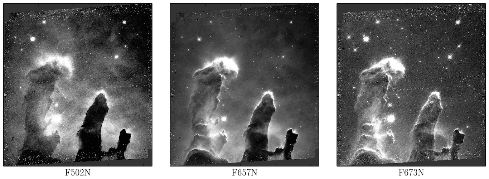
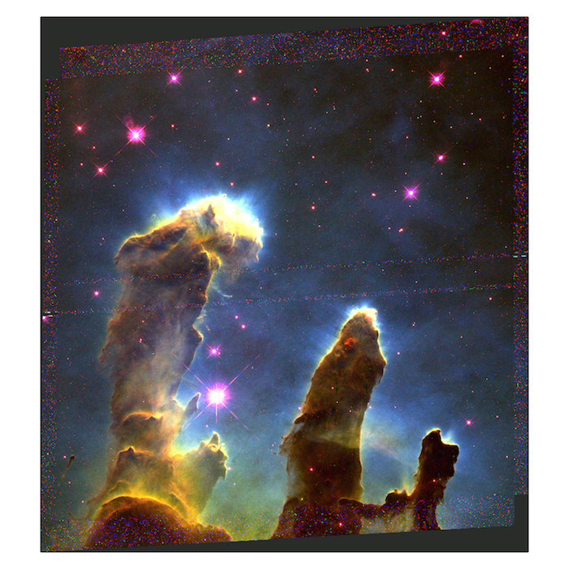

This tutorial is essentially an updated version of AstroBetter's instructions, and uses code adapted from Min-Su Shin's img_scale.py script.
Also viewable as an iPython notebook.
What we need to get started:
# setup notebook + import packages %matplotlib inline import numpy as np from matplotlib import pyplot as plt from astropy.io import fits # nothing below here is strictly necessary but I am picky about aesthetics %config InlineBackend.figure_format='retina' from matplotlib import rc rc('font', **{'family': 'serif', 'serif': ['Computer Modern Roman'], 'size':14}) rc('text', usetex=True)
Now we open the three .fits files we want to work with. Mine are three Hubble WFC3/UVIS images from the Hubble Heritage Eagle Nebula observing program in the filters F502N, F657N, and F673N.
# open your 3 fits images and load the image data to memory f1 = fits.open('fits_images/tricolor/F502N.fits') data_502 = f1[0].data f1.close() f2 = fits.open('fits_images/tricolor/F657N.fits') data_657 = f2[0].data f2.close() f3 = fits.open('fits_images/tricolor/F673N.fits') data_673 = f3[0].data f3.close()
It's always a good idea to look at your images to figure out how best to scale their color values beforehand; this can also be done in DS9, but for example's sake I've done it in Matplotlib here; note the vmin and vmax arguments for each image.
# quickly set up figure + subplots # this way is easier than creating a separate figure object for each image fig, ax = plt.subplots(1, 3, figsize=(11,4)) # remove annoying ticklabels plt.setp([a.get_xticklabels() + a.get_yticklabels() for a in ax], visible=False) # display all images and adjust vmin and vmax manually ax[0].imshow(data_502, vmin=-0.01, vmax=0.05, cmap='Greys_r') ax[0].set_xlabel('F502N') ax[1].imshow(data_657, vmin=-0.1, vmax=0.5, cmap='Greys_r') ax[1].set_xlabel('F657N') ax[2].imshow(data_673, vmin=-0.01, vmax=0.05, cmap='Greys_r') ax[2].set_xlabel('F673N') fig.tight_layout()
Now we need a function to normalize each image to the same scale (0 to 1). For more advanced options, including square root, log, and arsinh scales, check out img_scale.py.
# scale images so that all image values are from 0 to 1 def scale_img(input_data, vmin=None, vmax=None): img_data = np.array(input_data, copy=True) # set min and max value if none provided in kwargs if vmin == None: vmin = np.min(imageData) if vmax == None: vmax = np.max(imageData) # subtract minimum value from data img_data -= vmin # establish scale factor/new maximum value img_range = vmax - vmin # set all negative values to 0 and values above max to 1 img_data[np.where(img_data < 0)] = 0. img_data[np.where(img_data > img_range)] = 1. # select values within range and normalize to scale factor middle_values = np.where((img_data > 0) & (img_data <= img_range)) img_data[middle_values] /= img_range return img_data
We can now scale each image and combine them into one three-dimensional array, where the third dimension is RGB color:
# make individual color images blue = scale_img(data_502, vmin=-0.01, vmax=0.05) green = scale_img(data_657, vmin=-0.1, vmax=0.5) red = scale_img(data_673, vmin=-0.01, vmax=0.05) # put together individual images to make tricolor image colorimage = np.array([red.T, green.T, blue.T]).T # check that array dimensions are correct; last one must be 3 print colorimage.shape(4660, 4254, 3)
Let's look at the results!
# create figure object and set size to 7x7 inches fig = plt.figure(figsize=(7,7)) # display the image; no keyword arguments are necessary this time plt.imshow(colorimage) # different way of removing ticks plt.xticks([]) plt.yticks([])